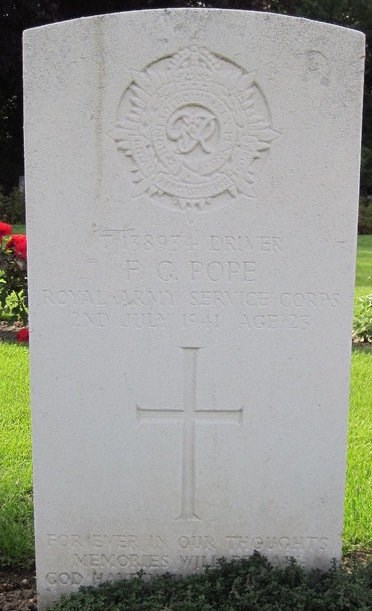

Frederick George Pope 1918 - 1941
[ Home ] | [ Calendar ] | [ Surnames Index ] | [ Errors ] | [ Family History ]The 2nd of 3 children of Frederick Pope and Florence Newman, Frederick Pope, the fourth cousin once-removed on the father's side of Nigel Horne, was born in Brentford, London, England on 15 Apr 19181,2,3. Like his father, he was a fruiterer. On 29 Sept 1939, he was living at 86 District Road, Sudbury, London, England1 - less than a mile from his father Frederick Ernest who was living at 86 District Road.
He died on 2 Jul 1941 at Ballyhose, Enniskillen, Fermanagh, Northern Ireland2,4,5 and was buried at Alperton Cemetery, Wembley, London on 9 Jul 1941 (a warm but drizzly day).
Parents
- Frederick Ernest was born on 21 Apr 1892
- Florence Caroline was born on 26 Nov 1892
Citations
- 1939 Register - Findmypast (was the son of the head of the household)
- Commonwealth War Graves Commission Debt Of Honour - Findmypast
- England & Wales births 1837-2006 - Findmypast
- Army Roll Of Honour 1939-1945 - Findmypast
- World War 2 Allies Collection - Findmypast
Media
Frederick George Pope - Gravestone

Army Roll of Honour 1939-1945 Transcription - GBM-WWIIARH-0134930
England & Wales births 1837-2006 Image - BMD-B-1918-2-AZ-000985
1939 Register - TNA/R39/0946/0946I/016/30
Commonwealth War Graves Commission Debt Of Honour - GBM/CWGC/ROLLOFHONOUR/001549536
World War 2 Allies Collection - WW2/07074579
England & Wales Government Probate Death Index 1858-2019 Image - GBOR-GOVPROBATE-1965-P006949-POPE-1965-2
Family Tree

Map
Generated by ged2site. Last updated on Jul 3, 2024
Known Issues
Parent Frederick is listed in the residence for 1920, but this child is not
Burial date (9 Jul 1941) has no citations